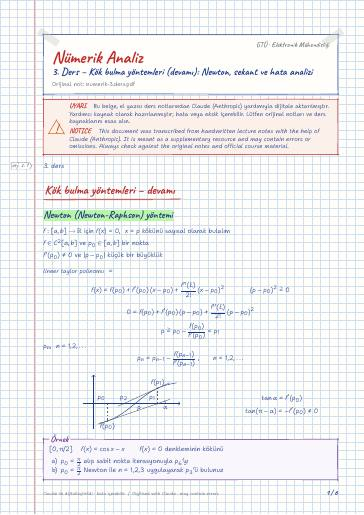

Numerical Analysis · Digital lecture note
Lecture 3 – Root-finding methods (continued): Newton, secant and error analysis
Nümerik Analiz – 3. Ders – Kök bulma yöntemleri (devamı): Newton, sekant ve hata analizi
- Course
- Numerical Analysis (MAT214)
- Semester
- Semester 3 · Fall 2022–23
- Format
- PDF · 6 pages · 0.1 MB · handwriting-style LaTeX
- Language
- Turkish
- Original note
- numerik-3.ders.pdf
Open the PDF (0.1 MB)LaTeX source (.tex)Original handwritten note

What is in this note?
Section headings of the note (in Turkish):
- Kök bulma yöntemleri – devamı
- Newton (Newton-Raphson) yöntemi
- Sekant yöntemi
- İterasyon yöntemlerinde Hata analizi
- Sonuç
- Uygulama 3
Text of the note
Show as plain text (Turkish; formulas and drawings are not included)
Kök bulma yöntemleri – devamı
Newton (Newton-Raphson) yöntemi
f:[a,b]→R için f(x)=0 , x=p kökünü sayısal olarak bulalım
lineer taylor polinomu =
p_0=π2 alıp sabit nokta iterasyonuyla p_6 'yı
δ>0 vardır ki, Newton iterasyonu her p_0[p-δ, p+δ] başlangıç iterasyonu için
p_0 ve p_1 başlangıç iterasyonlarına gereksinim duyuyor!
İterasyon yöntemlerinde Hata analizi
p_n , n=1,2,3,… dizisi p_n≠ p olacak biçimde p 'ye yakınsak bir dizi olsun. Eğer;
olacak şekilde λ ve α sayıları bulunabiliyorsa; p_n , n=1,2,3 , dizisi
``asimtotik hata sabiti λ olacak biçimde p sayısına α 'ıncı dereceden yakınsaktır.''
iterasyonu p[a,b] sabit noktasına lineer yakınsar.
ortalama değer teoremi ⇒ =g'(_n) (p_n-p)
p sayısı x=g(x) denkleminin çözümü olsun. Ayrıca g'(p)=0 ve p 'yi içeren bir I aralığında
sürekli g'' türevi mevcut olsun öyleki |g''(x)|<M sağlansın. Bu durumda öyle bir δ>0 sayısı
mevcut olurki, her p_0[p-δ, p+δ] başlangıç iterasyonu için p_n=g(p_n-1)
iterasyonu p 'ye quadratik yakınsak. Ayrıca keyfi büyük n sayılar için,
f(p)=0 ve f'(p)≠0 oldukça newton iterasyonu enaz kuadratik yakınsak.
p sayısı f(x) 'in m katlı sıfırıdır
x=0 sayısı f(x)=x^3-x^4 fonksiyonunun 3 katlı sıfırıdır
x=0 'ın f(x) 'in 2 katlı sıfırı olduğunu göst.
p_0=1 alarak, Newton yöntemi gereği oluşturulan iterasyon yakınsaktır fakat kuvadratik
p_0=-1 alınarak ve Newton yöntemi kullanarak p_2 'yi hesaplayın. p_0=0 olabilir mi?
b) p_0=-1 , p_1=0 alınarak sekant yöntemi kullanarak p_3 'ü hesaplayınız